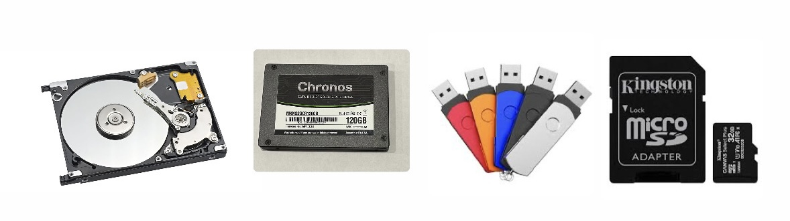
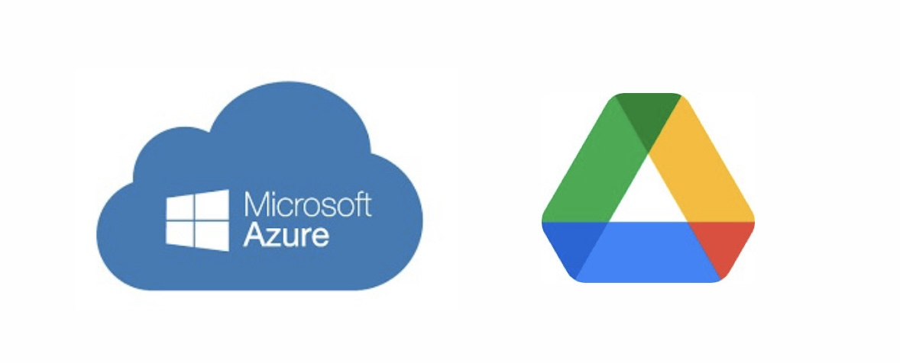

6.- ALMACENAMIENTO Y TRANSMISIÓN DE LA INFORMACIÓN DIGITAL
El almacenamiento digital se refiere a la forma en la que se guardan los datos en medios electrónicos para su posterior recuperación y uso. Existen distintas tecnologías que varían en capacidad, velocidad, portabilidad, durabilidad y coste.
1. Almacenamiento Local
Es aquel que se encuentra físicamente cerca del usuario, generalmente en el mismo dispositivo o en una red interna. Se caracteriza por ofrecer acceso rápido, independencia de conexión a internet y control directo de los datos.
- Discos duros (HDD): Usan componentes mecánicos y magnéticos. Son económicos y ofrecen gran capacidad, pero son más lentos y vulnerables al desgaste físico.
- Unidades de estado sólido (SSD): Son más rápidas que los HDD, al no tener partes móviles. Mejoran el rendimiento de ordenadores y dispositivos móviles, aunque tienen un coste mayor por gigabyte.
- Memorias USB (pendrives): Muy utilizadas por su portabilidad. Son útiles para compartir archivos rápidamente, aunque con capacidades limitadas.
- Tarjetas de memoria (SD, microSD): Frecuentes en cámaras, teléfonos y dispositivos móviles. Ofrecen capacidades de almacenamiento elevadas en formatos muy pequeños.

2. Almacenamiento Remoto o en la Nube
Este tipo de almacenamiento se encuentra en servidores externos a los que se accede por internet. Supone una revolución en la forma en que las personas y empresas gestionan la información.
- Servicios en la nube públicos como Google Drive, Dropbox, OneDrive o iCloud permiten almacenar y sincronizar archivos entre varios dispositivos y usuarios.
- Servicios en la nube empresariales como Amazon Web Services (AWS), Microsoft Azure o Google Cloud Platform ofrecen capacidades avanzadas de almacenamiento masivo, análisis de datos, copias de seguridad automatizadas, recuperación ante desastres y escalabilidad.
- Ventajas: accesibilidad desde cualquier lugar, posibilidad de compartir información fácilmente, reducción de costes en infraestructura.
- Inconvenientes: dependencia de la conectividad, posibles riesgos de privacidad y necesidad de confiar en terceros.
